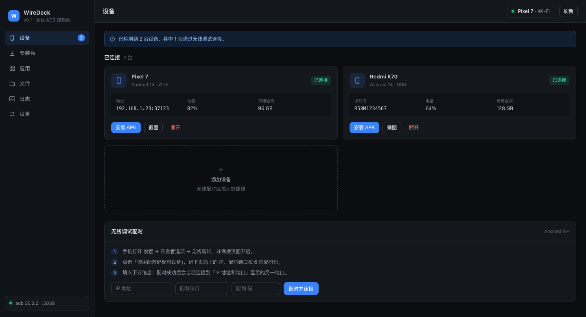

一个工具，覆盖日常调试
不用记 adb 命令，也不用装 Android Studio。
无线连接
扫码配对、配对码配对，启动时自动重连上次的设备。
安装 APK
拖放安装包即可推送并安装，实时进度，支持取消。
应用管理
查看已安装应用、详情与权限，卸载、启动、停止、清除数据、导出。
文件传输
截图保存到电脑，推送与拉取文件，可直接浏览手机目录。
实时日志
按应用过滤 logcat，自动识别崩溃与 ANR，一键复制。
Shell 控制台
常用命令快捷入口，输出清晰，支持复制与历史。
三步开始使用
首次打开需要手动放行（应用未经过 Apple 公证）。
1
下载并安装
打开 DMG，把 WireDeck 拖进「应用程序」文件夹。
2
首次打开
右键 WireDeck → 打开。若被拦截，到「系统设置 → 隐私与安全性」点「仍要打开」。
3
连接手机
手机打开无线调试，应用里点「扫码配对」，对准屏幕上的二维码。
手机需要 Android 11 及以上，并与电脑连接同一个 Wi-Fi。应用已内置 adb，无需额外安装。